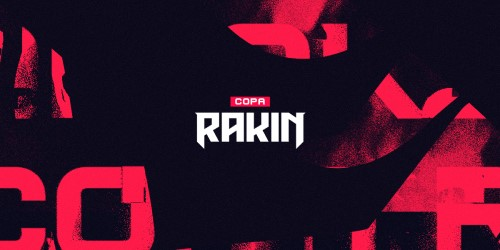
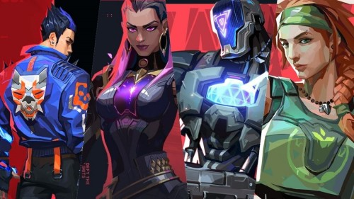
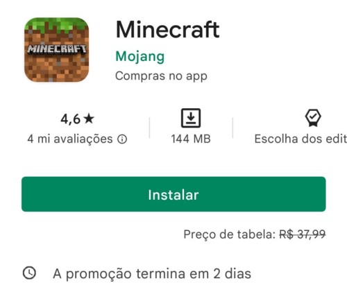
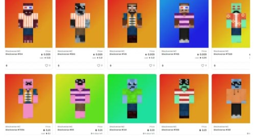

Grupos do Mundial 2022 de League of Legends são revelados e LOUD enfrentará Grupo A da Fnatic
Neste fim de semana (10 e 11) terminaram as últimas competições regionais do cenário competitivo de League of Legends (LoL) e, com isso, os grupos da Fase de Entrada do Mundial 2022 (Worlds 2022) foram sorteados. Os brasileiros da LOUD caíram no Grupo A, que conta com a Fnatic, 3ª colocada da Europa.O Grupo A terá os times: Fnatic (3º lugar da Europa), Evil Geniuses (3º da América do Norte), Beyond Gaming (2º do Pacífico), DetonatioN FocusMe (1º do Japão), Chiefs Esports Club (1º da Oceania) e LOUD (1º do Brasil). Já o Grupo B conta com times fortes, como DRX (4º da Coreia), Royal Never Give Up (4º da China), Saigon Buffalo (2º do Vietinã), MAD Lions (4º da Europa), İstanbul Wildcats (1º da Turquia) e Isurus (1º da América Latina).
Worlds 2022: “Estava com muito sono na hora do jogo”, admite Deft
O primeiro dia de Worlds 2022 foi marcado por diversos atrasos e longos intervalos entre os jogos, tanto que a última partida, entre DRX x RNG, se encerrou pouco antes das três horas da manhã, no horário de Brasília. Diante do inesperado longo dia, o AD Carry da equipe coreana, DEFT, admitiu que estava já com sono antes de enfrentar a representante da LPL."Quando eu soube que jogaríamos às 22h hoje, eu já sabia que seria bem tarde para mim, principalmente porque não tenho dormido muito bem, então o jogo atrasou ainda mais e então eu estava com muito sono na hora do jogo".
Um dos grandes destaques deste Mundial é a Champions Queue, uma espécie de Super Servidor da América do Norte onde somente os jogadores profissionais da própria região, além de quem irá disputar o Worlds, podem jogar. Deft teceu elogios à fila exclusiva, mas lamentou o fato da Riot te-la aberto “tão tarde.” “Queria que estivesse disponível antes, prefiro muito mais jogar a Champions Queue por conta do ping e dos jogadores do que a SoloQ normal, de resto estou bastante feliz”, comentou o AD Carry.
League of Legends: rework de Udyr é revelado com novas artes de skins
A Riot Games revelou um trailer com o rework do campeão Udyr de League Of Legends (LoL), mostrando como o personagem que foi lançado no game em 2009 ficará após a atualização de todas as habilidades e visual – incluindo as novas artes de skins. Uma atualização nos modos animais de Udyr, que passará a ser Carneiro, Javali, Urso e Fênix - pois a descrição detalhada será revelada futuramente. O perfil oficial mostrou algumas das novas artes das skins após a atualização, com destaque para a splash art tradicional, Udyr Faixa Preta, Udyr Oráculo do Dragão e Certamente Não é Udyr.
Copa Rakin será realizada entre 26 e 4 de dezembro com 128 equipes na qualificatória aberta e oito times nos playoffs. A premiação do torneio será de R$ 30 mil.

No Brasil, a Copa Rakin, Spike Series III – Invitational e Vava BTS Sunset são os torneios apoiados pela Riot.A Copa Rakin será realizada entre 26 e 4 de dezembro com 128 equipes na qualificatória aberta e oito times nos playoffs. A premiação do torneio será de R$ 30 mil.As inscrições da seletiva aberta vão acontecer entre 13 e 24 de outubro para a disputa do torneio que será nos dias 26 e 27 de outubro. O qualificatório terá limite máximo de 128 com séries MD3 e eliminação simples.Quatro equipes vão garantir a classificação aos playoffs pela seletiva aberta. Outros quatro times serão convidados. A fase final será em formato de dupla-eliminação e em séries MD3. A decisão acontecerá no dia 4 de dezembro em um MD5.
Valorant: mudanças em flashes de quatro agentes no PBE 5.07

A Riot Games iniciou, nesta última sexta-feira, uma série de mudanças no ciclo 5.07 do servidor de testes de Valorant, o PBE. Entre elas está alterações nas flashes de diversos agentes, com o objetivo de aprimorar os recursos de Skye, KAY/O, Reyna e Yoru. As novidades estão disponíveis para teste apenas para o continente norte-americano e devem chegar ao público a partir de 4 de outubro.De acordo com a desenvolvedora, as mudanças nas flashes de KAY/O e Skye tem como objetivo aumentar a interação da habilidade com o restante da equipe. Atualmente, as habilidades destes agentes são utilizadas muito individualmente. Por conta disso, a força individual da flashes desses operadores será enfraquecida.Desse modo, é dito, em thread feita no perfil oficial do Valorant, que "a Luz Desbravadora de Skye e a GRANADA/Clarão de KAY/O aumentará sua produção total em equipe ao coordenar com colegas de equipe e diminuir um pouco seu poder quando utilizada em jogadas individuais".
Minecraft aparece de graça no Android temporariamente

Quem ficou acordado até tarde na noite desta segunda-feira (9) pode ter aproveitado uma grande "promoção" que aconteceu na Play Store: o jogo Minecraft, que normalmente custa R$ 37,99, apareceu temporariamente de graça na plataforma.O game foi listado sem custos no Android por algumas horas, mas o anúncio na página oficial dizia que o jogo estaria sem custos por dois dias na plataforma. Atualmente, porém, o preço de Minecraft já voltou aos tradicionais R$ 37,99.A versão mobile de Minecraft traz gameplay similar ao que temos no game de PC e consoles, mas conta com o diferencial de ter controles na tela, otimizando a experiência para celulares. O game para smartphones ainda traz suporte para crossplay e permite até migrar conteúdos de outras plataformas.
Coleção de NFTs estilo Minecraft 'some' com mais de R$ 6 milhões

O jogo no formato pay to earn (P2E) e coleção de NFTs conhecido como Blockverse saiu do ar de forma inesperada neste final de semana. Baseado de forma não oficial em Minecraft, o projeto composto por 10 mil tokens não fungíveis simplesmente desapareceu — o que envolve ainda o sumiço de mais de US$ 1,2 milhão (cerca de R$ 6,4 milhões em conversão direta) em Ethereum, originalmente pagos pelos usuários para colecionar os NFTs e participar da plataforma.Segundo um levantamento da Atlas VPN, cerca de US$ 108,3 milhões foram roubados só em 2021 a partir de golpes envolvendo blockchain, inclusive em projetos que são retirados do ar no mesmo estilo do Blockverse.
Torneio de Round Six no Minecraft derruba internet de país
Um país inteiro ficou sem internet no último sábado (21) por cerca de duas horas e meia — e a culpa parece ter sido de um ataque direto contra jogadores de Minecraft que estavam disputando um torneio.
Esse é o resumo do caso envolvendo o Team Andorra, um grupo de participantes de um evento na Twitch chamado SquidCraft Games, que mistura as provas do fenômeno do streaming Round 6 com um mundo criado em Minecraft.No torneio, os participantes precisam passar pelos jogos mostrados na série e baseados em brincadeiras infantis, porém recriados em Minecraft. As provas incluem "Batatinha frita, 1, 2, 3", por exemplo, além de rodadas originais, como esconde-esconde.